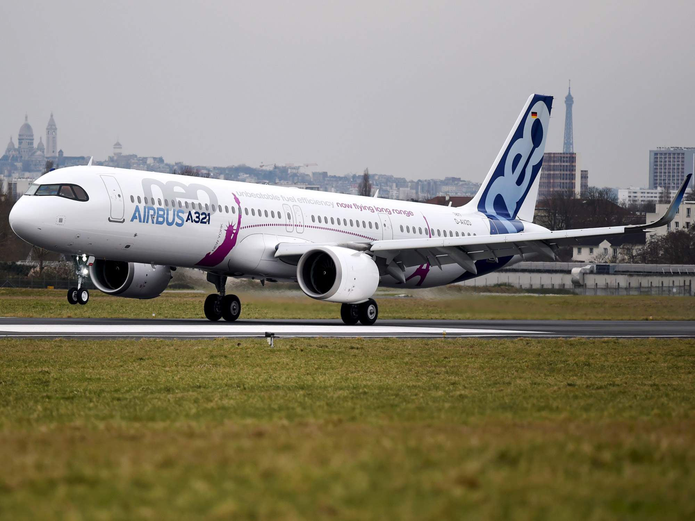
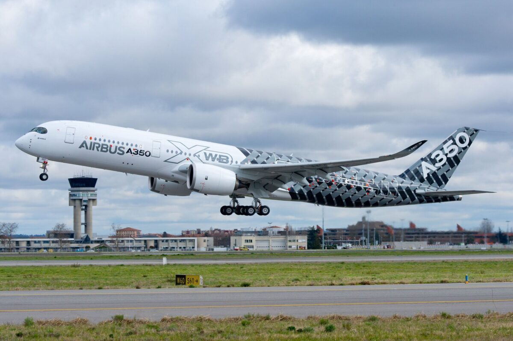

<!DOCTYPE html>
<html></html>
<head>
<link rel="stylesheet" href="Style.css">
<title> My Fav plane, I think =)</title>
</head>
<body>
    <body background="aviation-china-1920-1080-20203.jpg">
</body>

<div class="A321-Neo">
<h2>A321 Neo</h2>
<ul>
    <li>
        Why: because that is a super new aircraft it has like a lot of choice of we will do inflight like watching to the flim at the huge 13 inch or we can use the free wifi and it got a super duper zuper long range it can fly from JFK (New York) to CDG (Paris). that seem nothing but that is a narrow body aircraft so it surprised with a 7H10M long flight . This work for Vietnam Airlines, Eva Air, China Airlines and more
    </li>

</ul>
</div>

<div class="A330-Neo">
<h2>A330 Neo</h2>
<ul>
    <li> 
        Why: because it a new aircraft it got all of the thing that make the work done, We can watch a movie, use the wifi that it free, and that it a wode body aircraft so it more comfontable to sit on and it got my fav layout for the seat it like 2-4-2 that when i sit at the windows sit it like my mind was blown up the seat is so wide and the leg room are like for anyone who 2M hight. and it got a feature that my mind was blown it can connet to our own headphones with bluetooth. the nick name of this plane is The butter Plane (for and one didnt know what the word butter in aviation mean is smooth landing and take off)
    </li>

</ul>
</div>

<div class="A350-900XWB">
<h2>A350-900</h2>
<ul>
    <li>
        Why: because that it a new plane (not very new) it got the inflight system so we can watch flim or working. specal thing about this plane is because the long range fly it has the business class it can lie flat the whole seat and tranfer it to the bed and it got closing door and huge screen for entertainment (only for business class) some of the A350-900 plane it got another name for business class like in Qatar Airways ther name was call like "Qsuite" and on the Virgin Atlantic ther name was call like "Upper Class" it can fly any roote around the world. Fun fact the longest fly in the world was using the A350-900ULR (ULR stand for Ultra Long Range) was from JFK (New York) to SIN (Singapore) in 17 hours
    </li>

</ul>
</div>

<div class="B747-8i">
<h2>B747-8i</h2>
<ul>
    <li>
        Why: Because this is so old and it the 2 floor it can carry max 478 person the specal thing about this plane it has the first class cabin on the second floor. It got the huge wing lenth anf the B747-8i is the longest plane in the world. this plane is very old now so the inflight system was not abundant like the newer aircraft and it dont have wifi too. Fun fact the nickname of this plane is Qeeen of the sky. (the A380 was call king of the sky). Because it so old almost every airline rethire that plane just a few airlines still use it like (lufthansa.Flag carrier of Germany) and (korean air.Flag carrier of South Korea) 
    </li>

</ul>
</div>

<div class="B777">
    <h2>B777</h2>
    <ul>
        <li>
            Why: Because this is the biggest twinjet in the world and it pretty old and it has triple weels on the landing gear, if we fly on an 777-8,777-9 and 777X and it much newer so we could have a langer screen, wifi and the lie flat bed on the sky also this plane will get eyes of a lot of airliner like Vietnam Airlines, Qatar Airways, Emirates, Eva Air and Singapore Airlines. This plane can fly to any were that the fuel will do their jobs
        </li>

    </ul>
</div>

<div class="B787">
<h2>B787</h2>
<ul>
    <li>
        Why: Because it is the newest plane of boeing. I love the A350 so much but this it better it has in side the same layout as 3-3-3 for the economy class and  1-2-1 for the business class and it has the best part it has a dimable windows itt is like not closing the windows seald liek nomal but we closing that with the button and using eletricity to make the windows darker and close to the black. It use by Vietnam Airlines, Qatar Airways, Singapore Airlines and more it can almost can fly around the world with 3 time fuel load.
    </li>

</ul>
</div>
